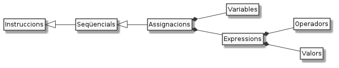

Operadors i expressions¶

Les dades, siguin representades amb valors literals o referenciades amb variables, poden ser combinades entre sí per obtenir nous valors. Aquestes combinacions es realitzen mitjançant operadors i reben el nom d”expressions.
Uns quants exemples d’expressions seguits per → valor:
1 + 2 → 3
En aquest cas tenim dues dades (1 i 2) combinades amb l’operador de suma
+. El valor que resulta d’aquesta expressió, naturalment és 3.1 → 1
Sí, un literal és també una expressió que resulta en, sense sorpreses, ell mateix.
1 + 3 - 4 * 5 / 2 → (1 + 3) - ((4 * 5) / 2) → 4 - (20 / 2) → 4 - 10 → -6
Podem fer expressions molt complexes. Els operadors tenen precedències que probablement hem estudiat abans (multiplicacio i divisió abans que suma i resta per exemple) i que podem explicitar amb parèntesis.
(1 + 2) * 3 → 3 * 3 → 9
Amb els parèntesis també podem definir un ordre diferent
"Re" + "nat" → "Renat"
Les expressions no tenen per què ser sempre numèriques. Ah! Fixa’t que fem servir el mateix símbol
+per sumar enters i per concatenar Strings!edat + 1 → ?
En comptes de literals, podem fer servir variables. Evidentment, el resultat de l’expressió no el podem saber fins que no tinguem el valor a que fa referència la variable.
Math.abs(-3) → 3
Hi ha uns elements anomenats funcions que ens permeten calcular nous valors a partir d’altres. A l’exemple, la funció
Math.abs()ens retornarà el valor positiu del nombre que hi posem entre parèntesis.Per descomptat, podem combinar les funcions dins de les expressions de manera similar als operadors.
5 < 6 → true
Fixa’t que no necessàriament el resultat d’una expressió ha de ser del tipus dels seus valors. En aquest exemple, l’expressió afirma que 5 és més petit que 6, cosa que és certa (
true)5 > 6 → false
Aquest exemple és molt similar a l’anterior. Ara afirma que 5 és més gran que 6 i el seu resultat, evidentment, és fals.
I què podem fer amb una expressió? Doncs amb el que sabem de programació, de moment podem assignar el seu resultat a una variable, fer-la servir per composar una expressió més gran o bé mostrar el resultat per pantalla.
int edat = 18;
// simulem que passa un any
edat = edat + 1:
// mostrem el resultat
System.out.println(edat); // mostrarà 19
Hi ha diferents tipus d’expressions. En veurem algunes de les més importants a continuació: